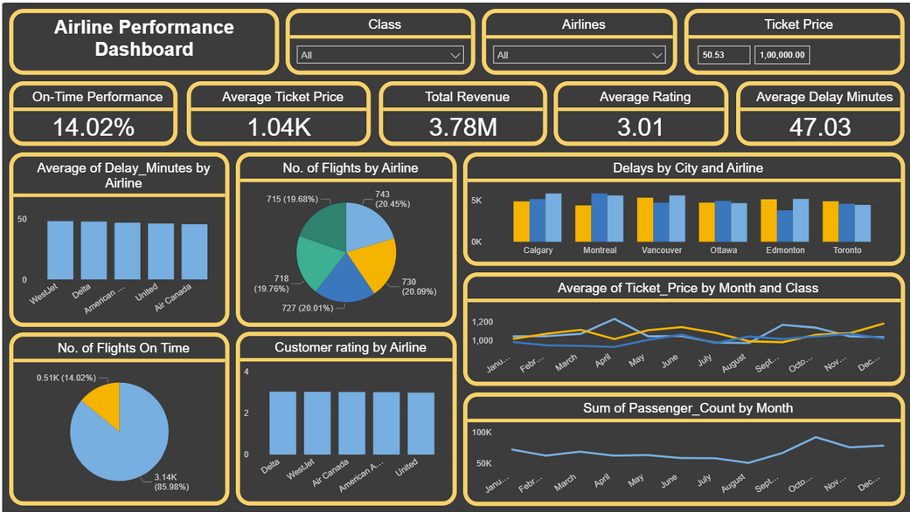

About Me
I am a results-driven Data Analyst with hands-on experience in building end-to-end BI solutions, data pipelines, and advanced visualizations across diverse industries. With a Master’s degree in Information Systems from Northeastern University and a strong technical foundation in tools like Power BI, Python, SQL, Tableau, and Snowflake, I specialize in transforming raw data into strategic insights.
I’ve led impactful projects—ranging from real-time ad performance dashboards to customer segmentation models—delivering measurable business outcomes like reducing manual reporting by 80%, increasing targeting accuracy by 30%, and improving data consistency across millions of records. My expertise lies in ELT pipelines, forecasting, A/B testing, and executive dashboarding using modern analytics stacks including dbt, Azure, Databricks, and Power Platform.
Passionate about continuous learning and storytelling with data, I thrive at the intersection of analytics and decision-making, enabling data-informed business growth.
Technical Skills
Programming Languages: Python, SQL, R, DAX, M, HTML, CSS, JavaScript, YAML, JSON, LaTeX
Technologies: Power BI, Tableau, Looker, dbt, Databricks, Snowflake, BigQuery, Redshift, Azure Synapse, Airflow, Fivetran, Git, Spark, Hadoop, Kafka, Excel (Advanced), Power Query, Power Automate, REST APIs, Postman, MongoDB, MySQL, PostgreSQL, AWS, GCP, Azure, Jupyter, VS Code
Core Skills: Data Analytics, Business Intelligence (BI), Data Modeling, ETL/ELT, Data Warehousing, Forecasting, A/B Testing, Dashboard Development, Statistical Analysis, Data Cleaning, KPI Reporting, Data Visualization, Machine Learning (Basics), Predictive Analytics, Data Governance, CI/CD for Analytics
Featured Project
Airline Performance Dashboard
Analyzed on-time performance, delay minutes, and revenue data across 6 major airlines. Built in Power BI with slicers, custom DAX, and trend insights by month, city, class, and carrier.
View Full ProjectCity-wide Emergency Response Dashboard

Interactive Power BI dashboard analyzing 10,000+ emergency incidents across 6 neighborhoods, highlighting response efficiency and weather impact on outcomes.
View Full ProjectPrime Video Content Analysis Dashboard

A comprehensive data-driven study analyzing 9,655 titles across 101 years of entertainment content (1920-2021).
View Full ProjectDiabetes Readmission Prediction
Used machine learning to predict hospital readmission risk for diabetic patients, improving early intervention potential.
View Full ProjectExperience
Data Analyst
Pyramid Graphic Industries, India (May 2024 – Present)
- Built an end-to-end Power BI dashboard integrated with Azure SQL Database and Power Automate, reducing manual reporting by 80%.
- Orchestrated ELT pipelines using dbt, Fivetran, and Snowflake to consolidate marketing, loyalty, and footfall data.
- Implemented advanced DAX measures and RLS for customer segmentation across 100+ locations.
- Embedded Prophet models in Power BI using Python, improving sales forecasting accuracy by 22%.
- Analyzed churn behavior with SQL, pandas, and scikit-learn, reducing customer dropout by 12%.
- Collaborated cross-functionally to build executive-level KPI dashboards, accelerating decisions by 60%.
Data Analyst Intern
Sandesh Digital Pvt. Ltd., India (Jun 2021 – Jul 2021)
- Built real-time ad performance dashboards using Tableau, Snowflake, and Kafka, cutting underperformance by 25%.
- Developed scalable Python ETL pipelines in Databricks integrating CRM and Nielsen data (20M+ records).
- Performed A/B testing using SciPy and StatsModels, improving mobile user engagement by 18%.
- Implemented CI/CD data validation with Great Expectations and Azure DevOps, reducing dashboard issues by 90%.
- Modernized reporting using LookML, improving dashboard load speed by 40% and boosting adoption by 50%.
- Automated analytics report refresh using Apache Airflow and Slack, ensuring 99.8% SLA compliance.
Education
Master of Science in Information Systems
Northeastern University, Toronto
Bachelor of Engineering in Information Technology
Gujarat Technological University, Ahmedabad